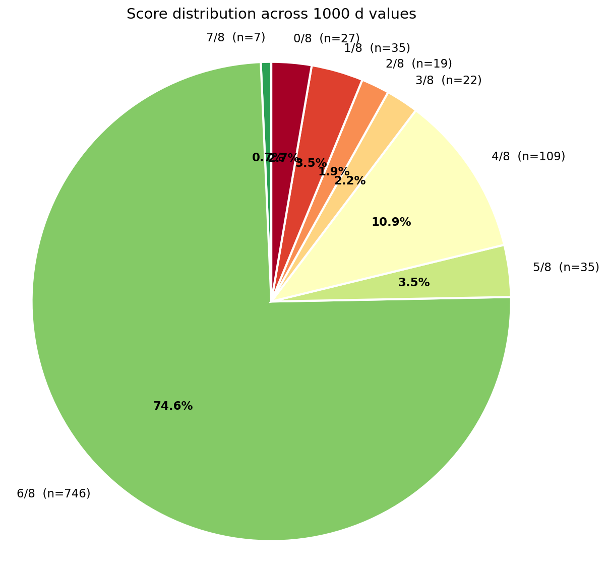

Computers
The first attempt that one can think of is using computers to just get a magic square of squares.
Ignoring the fact that it has been done(and upto the trillions) to do so we’d need a program.
Since the program doesn’t need to be heavily optimized we’ll just write it in python.
The program
This is a simple python code for finding magic square of squares. A naïve approach to be sure but spamming for loops works well enough.
The method used is to look for magic square of squares using the pythagorean quadruples. For Pythagorean quadruples can be parametrically generated with the following formula. \[a = (m²+n²-p²-q²),\ b = 2(mq+np),\ c = 2(nq-mp),\ d = m²+n²+p²+q²\]
"""
ms.py — Exhaustive magic-square-of-squares search.
Replaces the v2 center-out + row-pair heuristics with a single
backtracking search that produces TRUE max scores in 0..8 for every d.
Quick start:
python ms.py # d_max=100, no chart
python ms.py 200 --plot # d_max=200, generate pie chart
python ms.py --help # see all options
See the COMMAND-LINE USAGE block near the bottom of this file for details.
Search structure:
- Process the 8 lines in an order that maximizes early cell-sharing:
row1, col1, diag↘, diag↗, row0, row2, col0, col2.
- At each line, either ASSIGN a triple (compatible with currently pinned
cells, contributes +1 to score) or SKIP (the line is treated as
invalid; contributes 0).
- Branch-and-bound: prune when partial_score + (remaining lines) <= best.
- After all 8 lines processed, any unpinned cells get a sentinel value
that cannot complete any line; the final score counts all 8 lines.
"""
from itertools import permutations as iperms
from collections import defaultdict
from math import isqrt, gcd
# 1. Parametric generation (FIXED, from v2)
def find_quadruples_parametric(d_max: int) -> dict[int, set[tuple]]:
primitives: set[tuple] = set()
param_max = int(d_max ** 0.5) + 2
for m in range(0, param_max):
for n in range(0, param_max):
for p in range(0, param_max):
for q in range(0, param_max):
d = m*m + n*n + p*p + q*q
if d == 0:
continue
if d > d_max:
break
if (m + n + p + q) % 2 == 0:
continue
if gcd(gcd(m, n), gcd(p, q)) != 1:
continue
a = abs(m*m + n*n - p*p - q*q)
b = 2 * (m*q + n*p)
c = 2 * abs(n*q - m*p)
if a == 0 or b == 0 or c == 0:
continue
if len({a, b, c}) != 3:
continue
primitives.add((*tuple(sorted((a, b, c))), d))
solutions: dict[int, set[tuple]] = defaultdict(set)
for (a, b, c, d) in primitives:
k = 1
while k * d <= d_max:
solutions[k * d].add(tuple(sorted((k*a, k*b, k*c))))
k += 1
return dict(solutions)
# 2. Geometry constants
# All 8 lines as triples of cell indices (cells numbered 0..8 row-major).
_LINES_ALL = [
(0, 1, 2), # row 0
(3, 4, 5), # row 1
(6, 7, 8), # row 2
(0, 3, 6), # col 0
(1, 4, 7), # col 1
(2, 5, 8), # col 2
(0, 4, 8), # diag ↘
(2, 4, 6), # diag ↗
]
_LINE_NAMES_ALL = [
"row 0", "row 1", "row 2",
"col 0", "col 1", "col 2",
"diag ↘", "diag ↗",
]
# Search-order indices into _LINES_ALL: process through-center lines first
# so we pin the high-degree center cell early.
_SEARCH_ORDER = [1, 4, 6, 7, 0, 2, 3, 5]
# = row1, col1, diag↘, diag↗, row0, row2, col0, col2
# 3. Triple indexes for fast lookup
def build_triple_indexes(triples: set[tuple]) -> dict:
"""Build lookup tables for triples passing through a value or pair."""
by_value: dict[int, list[tuple]] = defaultdict(list)
by_pair: dict[tuple, list[tuple]] = defaultdict(list)
for t in triples:
for v in t:
by_value[v].append(t)
a, b, c = t
# Store both orderings of each pair so lookup is direction-free
by_pair[(a, b)].append(t)
by_pair[(b, a)].append(t)
by_pair[(a, c)].append(t)
by_pair[(c, a)].append(t)
by_pair[(b, c)].append(t)
by_pair[(c, b)].append(t)
return {"by_value": dict(by_value), "by_pair": dict(by_pair)}
# 4. The exhaustive search
def find_best_magic_square(d: int, triples: set[tuple]) -> dict | None:
"""Find the grid with maximum score (0..8) for this d."""
S = d * d
if not triples:
return None
idx = build_triple_indexes(triples)
by_value = idx["by_value"]
by_pair = idx["by_pair"]
# Convert triple set to a list for stable iteration
triple_list = sorted(triples)
# State: grid (9 cells, None if unpinned), score so far, lines decided so far.
# We mutate a single grid array during backtracking.
grid = [None] * 9
best = {"score": -1, "grid": None}
def score_full_grid(g):
"""Count valid lines in a fully-or-partially filled grid."""
sc = 0
for (p, q, r) in _LINES_ALL:
if g[p] is None or g[q] is None or g[r] is None:
continue
if g[p]*g[p] + g[q]*g[q] + g[r]*g[r] == S:
sc += 1
return sc
def candidate_triples_for_line(line_idx: int):
"""Return list of (triple, permutation) compatible with current grid pins."""
p, q, r = _LINES_ALL[line_idx]
v_p, v_q, v_r = grid[p], grid[q], grid[r]
pinned = [(pos, val) for pos, val in [(p, v_p), (q, v_q), (r, v_r)]
if val is not None]
n_pinned = len(pinned)
if n_pinned == 0:
# All triples, all 6 permutations
for t in triple_list:
for perm in iperms(t):
yield t, perm
elif n_pinned == 1:
pos1, val1 = pinned[0]
cands = by_value.get(val1, [])
for t in cands:
# Place val1 at pos1; remaining 2 values go to the other 2 cells.
others = [v for v in t if v != val1] + ([val1] * (t.count(val1) - 1))
# Simpler: try both permutations of "the other two".
# Find positions other than pos1 in this line:
line = _LINES_ALL[line_idx]
free_positions = [pos for pos in line if pos != pos1]
# Values in triple that aren't val1 (handling multiplicity):
rem_values = list(t)
rem_values.remove(val1)
# All permutations of remaining values into the 2 free positions:
for perm in iperms(rem_values):
full_perm = [None]*3
full_perm[line.index(pos1)] = val1
for i, fp in enumerate(free_positions):
full_perm[line.index(fp)] = perm[i]
yield t, tuple(full_perm)
elif n_pinned == 2:
(pos1, val1), (pos2, val2) = pinned
cands = by_pair.get((val1, val2), [])
for t in cands:
# The third value is forced
third_value = (t[0] + t[1] + t[2]) - val1 - val2
line = _LINES_ALL[line_idx]
free_positions = [pos for pos in line if pos not in (pos1, pos2)]
if len(free_positions) != 1:
continue
free_pos = free_positions[0]
full_perm = [None]*3
full_perm[line.index(pos1)] = val1
full_perm[line.index(pos2)] = val2
full_perm[line.index(free_pos)] = third_value
yield t, tuple(full_perm)
else: # n_pinned == 3
# Line is fully pinned; check if the multiset matches some triple.
current = tuple(sorted([v_p, v_q, v_r]))
if current in triples:
# No new placement; perm is just the current values
yield current, (v_p, v_q, v_r)
def backtrack(order_idx: int, score_so_far: int):
# Prune: upper bound = score_so_far + remaining lines
remaining = len(_SEARCH_ORDER) - order_idx
if score_so_far + remaining <= best["score"]:
return
if order_idx == len(_SEARCH_ORDER):
# All lines processed. Final score is the count of valid lines
# in the (partially) filled grid.
final = score_full_grid(grid)
if final > best["score"]:
best["score"] = final
best["grid"] = list(grid)
return
line_idx = _SEARCH_ORDER[order_idx]
line = _LINES_ALL[line_idx]
# Branch 1: SKIP this line (don't require it to be valid).
# Cells on the line remain whatever they currently are (possibly None).
backtrack(order_idx + 1, score_so_far)
# Branch 2: ASSIGN — try every compatible (triple, permutation).
# We need to track which cells we newly pin so we can undo.
for triple, perm in candidate_triples_for_line(line_idx):
v_p, v_q, v_r = perm
# Check distinctness among the three values in this line
if len({v_p, v_q, v_r}) != 3:
continue
p, q, r = line
# Check compatibility with already-pinned cells
ok = True
new_pins = []
for pos, val in [(p, v_p), (q, v_q), (r, v_r)]:
if grid[pos] is None:
# Check this value doesn't already appear elsewhere in grid
if val in grid:
ok = False
break
new_pins.append(pos)
elif grid[pos] != val:
ok = False
break
if not ok:
# Undo any new_pins we set (we didn't set any since we break early)
continue
# Apply the new pins
saved = [(pos, grid[pos]) for pos in new_pins]
for pos in new_pins:
# We must assign the correct value
line_pos_idx = line.index(pos)
grid[pos] = perm[line_pos_idx]
# Verify after assignment that no value is duplicated
non_none = [v for v in grid if v is not None]
if len(set(non_none)) == len(non_none):
backtrack(order_idx + 1, score_so_far + 1)
# Undo
for pos, old_val in saved:
grid[pos] = old_val
backtrack(0, 0)
if best["grid"] is None:
return None
flat = tuple(v if v is not None else 0 for v in best["grid"])
# Note: unpinned cells render as 0 in the displayed grid. That's just
# a display detail; they don't affect the score (which was computed
# treating None as "not contributing to any line").
valid_lines = [
_LINE_NAMES_ALL[i]
for i, (p, q, r) in enumerate(_LINES_ALL)
if best["grid"][p] is not None
and best["grid"][q] is not None
and best["grid"][r] is not None
and best["grid"][p]**2 + best["grid"][q]**2 + best["grid"][r]**2 == S
]
return {
"grid": [list(flat[0:3]), list(flat[3:6]), list(flat[6:9])],
"flat": flat,
"score": best["score"],
"valid_lines": valid_lines,
"S": S,
"d": d,
"method": "exhaustive backtracking",
}
# 5. Driver functions
def score_all(solutions: dict, min_triples: int = 1) -> list[dict]:
"""Search every d with at least min_triples triples."""
results = []
candidates = {d: t for d, t in solutions.items() if len(t) >= min_triples}
total = len(candidates)
for idx, (d, triples) in enumerate(sorted(candidates.items()), 1):
print(f" [{idx}/{total}] d={d} ({len(triples)} triples)...", end=" ", flush=True)
result = find_best_magic_square(d, triples)
if result:
print(f"score={result['score']}/8")
results.append(result)
else:
print("no result")
results.sort(key=lambda r: r["score"], reverse=True)
return results
def group_by_score(results: list[dict]) -> dict[int, list[int]]:
by_score: dict[int, list[int]] = defaultdict(list)
for r in results:
by_score[r["score"]].append(r["d"])
for s in by_score:
by_score[s].sort()
return dict(by_score)
def plot_score_distribution(by_score: dict[int, list[int]],
d_max: int | None = None,
save_path: str | None = None,
show: bool = True) -> None:
"""
Render a pie chart of how many d values fall into each score bucket.
If d_max is provided, d values in [1, d_max] that don't appear in
by_score are folded into a 0/8 bucket — these are d values with no
Pythagorean triples (no valid line is possible). After this fold,
the total of all slices equals d_max.
"""
try:
import matplotlib.pyplot as plt
except ImportError:
print("matplotlib not installed; skipping pie chart")
return
if not by_score and d_max is None:
print("No results to plot")
return
# Build the final by_score dict, possibly with an injected 0/8 bucket.
plot_by_score = {s: list(ds) for s, ds in by_score.items()}
if d_max is not None:
scored_ds = {d for ds in plot_by_score.values() for d in ds}
missing = sorted(set(range(1, d_max + 1)) - scored_ds)
if missing:
plot_by_score.setdefault(0, []).extend(missing)
plot_by_score[0].sort()
scores_sorted = sorted(plot_by_score.keys(), reverse=True)
counts = [len(plot_by_score[s]) for s in scores_sorted]
labels = [f"{s}/8 (n={len(plot_by_score[s])})" for s in scores_sorted]
cmap = plt.cm.RdYlGn
colors = [cmap(s / 8) for s in scores_sorted]
fig, ax = plt.subplots(figsize=(9, 9))
wedges, texts, autotexts = ax.pie(
counts, labels=labels, colors=colors,
autopct=lambda pct: f"{pct:.1f}%",
startangle=90,
wedgeprops=dict(edgecolor="white", linewidth=2),
textprops=dict(fontsize=11),
)
for autotext in autotexts:
autotext.set_color("black")
autotext.set_fontweight("bold")
total = sum(counts)
ax.set_title(f"Score distribution across {total} d values",
fontsize=14, pad=20)
ax.axis("equal")
if save_path:
fig.savefig(save_path, dpi=150, bbox_inches="tight")
print(f" Saved pie chart to {save_path}")
if show:
plt.show()
plt.close(fig)
def print_grid(result: dict) -> None:
flat = result["flat"]
S = result["S"]
d = result["d"]
print(f"\n d={d} S=d²={S} score={result['score']}/8")
print(f" Valid: {result['valid_lines']}")
print("\n Values:")
for row in result["grid"]:
print(" ", " ".join(f"{v:>5}" for v in row))
print(" Line check:")
for name, (p, q, r) in zip(_LINE_NAMES_ALL, _LINES_ALL):
if flat[p] == 0 or flat[q] == 0 or flat[r] == 0:
print(f" [--] {name:8}: (unpinned cell)")
continue
total = flat[p]**2 + flat[q]**2 + flat[r]**2
mark = "OK" if total == S else "--"
print(f" [{mark}] {name:8}: {flat[p]:>3}²+{flat[q]:>3}²+{flat[r]:>3}² = {total}")
# =============================================================================
# COMMAND-LINE USAGE
# =============================================================================
#
# Basic form:
# python ms.py [d_max] [min_triples] [options]
#
# Positional arguments (both optional):
# d_max Upper bound on d to search. Default: 100.
# min_triples Skip any d that has fewer than this many triples. Default: 1
# (search everything with at least one triple).
#
# Options:
# --plot Generate a pie chart of the score distribution.
# Without this flag, no chart is produced.
# --plot-path PATH Save the chart to PATH instead of the default name
# (score_distribution_v3_dmax{D_MAX}.png). Implies --plot.
# --top-n N Print up to N example squares for each score bucket
# (highest score first). Default: 5. Use 0 to skip
# example printing entirely.
# -h, --help Show usage info.
#
# Examples:
# python ms.py # default everything
# python ms.py 200 # d up to 200
# python ms.py 200 3 # also require 3+ triples
# python ms.py 200 --plot # with pie chart
# python ms.py 200 --top-n 10 # show 10 examples per score
# python ms.py 200 --top-n 0 --plot # no examples, just the chart
# python ms.py 500 --plot-path big.png # custom chart filename
#
# Output files (when --plot is used) are written to the working directory.
# =============================================================================
if __name__ == "__main__":
import argparse
parser = argparse.ArgumentParser(
description="Pythagorean Quadruples + Magic Square Solver (v3, exhaustive)",
)
parser.add_argument("d_max", type=int, nargs="?", default=100,
help="upper bound on d to search (default: 100)")
parser.add_argument("min_triples", type=int, nargs="?", default=1,
help="skip d values with fewer triples (default: 1)")
parser.add_argument("--plot", action="store_true",
help="generate a pie chart of the score distribution")
parser.add_argument("--plot-path", type=str, default=None,
help="path to save the pie chart "
"(default: score_distribution_v3_dmax{D_MAX}.png; "
"implies --plot)")
parser.add_argument("--top-n", type=int, default=5,
help="number of example squares to print per score "
"bucket (default: 5; use 0 to skip examples)")
args = parser.parse_args()
D_MAX = args.d_max
MIN_TRIPLES = args.min_triples
do_plot = args.plot or (args.plot_path is not None)
plot_path = args.plot_path or f"score_distribution_v3_dmax{D_MAX}.png"
print("=" * 65)
print(" Pythagorean Quadruples + Magic Square Solver (v3, exhaustive)")
print(f" d_max={D_MAX}, min_triples={MIN_TRIPLES}")
print("=" * 65)
solutions = find_quadruples_parametric(D_MAX)
total = sum(len(v) for v in solutions.values())
print(f"\nDistinct d values : {len(solutions)}")
print(f"Total triples : {total}\n")
print("Running exhaustive search...")
print("-" * 65)
results = score_all(solutions, min_triples=MIN_TRIPLES)
if args.top_n > 0:
print(f"\n{'='*65}")
print(f" Top {args.top_n} examples per score (highest score first)")
print("=" * 65)
# Group results by score; results is already sorted desc by score,
# and within ties by ascending d (Python stable sort + score_all order).
examples_by_score: dict[int, list[dict]] = defaultdict(list)
for r in results:
examples_by_score[r["score"]].append(r)
for s in sorted(examples_by_score, reverse=True):
bucket = examples_by_score[s]
shown = bucket[:args.top_n]
print(f"\n--- score {s}/8 ({len(shown)} of {len(bucket)} shown) ---")
for r in shown:
print_grid(r)
print(f"\n{'='*65}")
print(" Score distribution")
print("=" * 65)
by_score = group_by_score(results)
# Include d values with no triples as 0/8 in the text output too
scored_ds = {d for ds in by_score.values() for d in ds}
missing = sorted(set(range(1, D_MAX + 1)) - scored_ds)
for s in sorted(by_score, reverse=True):
ds = by_score[s]
print(f" {s}/8 ({len(ds)}) d values: {ds[:20]}{'...' if len(ds)>20 else ''}")
if missing:
print(f" 0/8 ({len(missing)}) d values: {missing[:20]}{'...' if len(missing)>20 else ''} (no triples)")
if do_plot:
plot_score_distribution(
by_score,
d_max=D_MAX,
save_path=plot_path,
show=False,
)
else:
print("\n(pie chart skipped — pass --plot to generate one)")
Results

[Here are the results when d = 10,000 in a pie chart.]